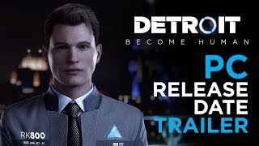
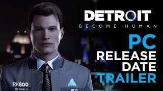
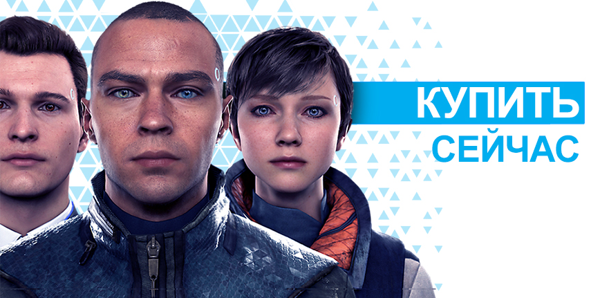
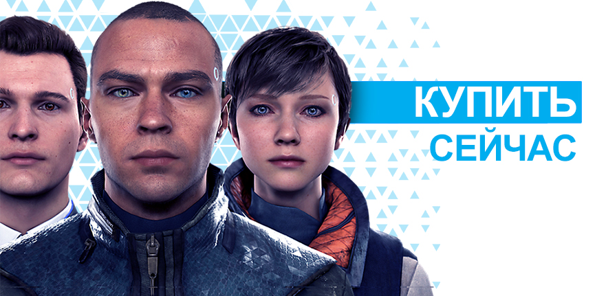

.jpg)
.jpg)
.jpg) 

ОБЗОР
Detroit: Become Human, новейшая и самая амбициозная игра от Quantic Dream наконец-то выходит на ПК! В проекте приняли участие всемирно известные актеры – Джесси Уильямс («Анатомия страсти»), Клэнси Браун («Карнавал»), Лэнс Хенриксен («Чужие»), Брайан Декарт (Настоящая кровь) и Вэлори Керри («Сумерки»). Detroit: Become Human передает судьбу как человечества, так и андроидов в ваши руки, перенеся вас в недалекое и не такое уж невозможное будущее, в котором машины стали разумнее людей. Каждое ваше решение окажет влияние на исход игры, предлагающей окунуться в одну из самых замысловатых и ветвящихся историй из когда либо созданных.
ЧТО ДЕЛАЕТ НАС ЛЮДЬМИ?
2038, Детройт. Технологии эволюционировали до такой степени, что андроиды стали встречаться не реже людей. Они разговаривают, двигаются и ведут себя, как человеческие существа, но они – всего лишь машины на службе у людей.
Играйте тремя уникальными андроидами и воспринимайте мир, балансирующий на грани хаоса, – возможно, наше будущее, – их глазами. Каждое из ваших решений радикально повлияет на развитие напряженного и ветвящегося сюжета.
Вас ждут моральные дилеммы, вам предстоит решать, кому жить, а кому умереть. Каким окажется будущее Детройта и судьба человечества в результате тысяч принятых вами решений и десятков возможных концовок?
ОСОБЕННОСТИ ИГРЫ
ИГРАЙТЕ СВОЮ РОЛЬ В ЗАХВАТЫВАЮЩЕЙ ИСТОРИИ –
Погрузитесь в мир, в котором моральные дилеммы и непростые решения могут превратить рабов-андроидов в преобразующих мир революционеров. Узнайте, что значит быть человеком с точки зрения аутсайдера, – и взгляните на мир глазами машины.
ИХ ЖИЗНИ, ВАШ ВЫБОР – Влияйте на амбициозную ветвящуюся историю, в которой ваши решения не только определяют участь трех главных героев, но и целого города – Детройта. Поступки находящихся под вашим управлением Кары, Коннора и Маркуса могут означать жизнь или смерть, и если один из них заплатит высшую цену, история все-равно продолжится…
БЕСЧИСЛЕННЫЕ ПУТИ, БЕСЧИСЛЕННЫЕ КОНЦОВКИ – Каждое принятое вами решение, даже самое незначительное, влияет на исход истории. Одинаковых прохождений этой игры не существует: играйте снова и и снова и открывайте совершенно новые финалы.
ИГРА ПОЛНОСТЬЮ ОПТИМИЗИРОВАНА ДЛЯ ПК – Доступная ранее исключительно на PlayStation® 4, Detroit: Become Human вышла на ПК с потрясающей графикой, разрешением 4K, частотой смены кадров 60 кадр/сек. и полной интеграцией управления с помощью мышки/клавиатуры и геймпада. Вас ждет наиболее полное издание Detroit: Become Human на сегодняшний день.
ПОДДЕРЖИВАЕМЫЕ ЯЗЫКИ:
Закадровое озвучивание: Арабский / Португальский (Бразилия) / Английский / Французский / Немецкий / Итальянский / Японский / Испанский (Мексика) / Польский / Португальский / Русский / Испанский
СУБТИТРЫ: Английский / Французский / Немецкий / Итальянский / Испанский / Голландский / Португальский / Шведский / Датский / Норвежский / Финский / Русский / Польский / Японский / Корейский / Традиционный китайский / Греческий / Чешский / Венгерский / Хорватский / Испанский (Мексика) / Португальский (Бразилия) / Турецкий / Арабский
ВОЗРАСТНОЙ РЕЙТИНГ: PEGI 18, ESRB Mature 17+
СПЕЦИФИКАЦИИ:
МИНИМАЛЬНЫЕ ТРЕБОВАНИЯ:
РЕКОМЕНДУЕМЫЕ ТРЕБОВАНИЯ:
© Sony Interactive Entertainment Europe ltd, 2018 г. Разработано компанией Quantic Dream. "Detroit: Become Human" является торговой маркой Sony Interactive Entertainment Europe. Все права защищены. Epic Games Store и его логотип являются торговыми марками Epic Games, Inc. 
Detroit: Become Human, новейшая и самая амбициозная игра от Quantic Dream наконец-то выходит на ПК! В проекте приняли участие всемирно известные актеры – Джесси Уильямс («Анатомия страсти»), Клэнси Браун («Карнавал»), Лэнс Хенриксен («Чужие»), Брайан Декарт (Настоящая кровь) и Вэлори Керри («Сумерки»). Detroit: Become Human передает судьбу как человечества, так и андроидов в ваши руки, перенеся вас в недалекое и не такое уж невозможное будущее, в котором машины стали разумнее людей. Каждое ваше решение окажет влияние на исход игры, предлагающей окунуться в одну из самых замысловатых и ветвящихся историй из когда либо созданных.
ЧТО ДЕЛАЕТ НАС ЛЮДЬМИ?
2038, Детройт. Технологии эволюционировали до такой степени, что андроиды стали встречаться не реже людей. Они разговаривают, двигаются и ведут себя, как человеческие существа, но они – всего лишь машины на службе у людей.
Играйте тремя уникальными андроидами и воспринимайте мир, балансирующий на грани хаоса, – возможно, наше будущее, – их глазами. Каждое из ваших решений радикально повлияет на развитие напряженного и ветвящегося сюжета.
Вас ждут моральные дилеммы, вам предстоит решать, кому жить, а кому умереть. Каким окажется будущее Детройта и судьба человечества в результате тысяч принятых вами решений и десятков возможных концовок?
ОСОБЕННОСТИ ИГРЫ
ИГРАЙТЕ СВОЮ РОЛЬ В ЗАХВАТЫВАЮЩЕЙ ИСТОРИИ –
Погрузитесь в мир, в котором моральные дилеммы и непростые решения могут превратить рабов-андроидов в преобразующих мир революционеров. Узнайте, что значит быть человеком с точки зрения аутсайдера, – и взгляните на мир глазами машины.
ИХ ЖИЗНИ, ВАШ ВЫБОР – Влияйте на амбициозную ветвящуюся историю, в которой ваши решения не только определяют участь трех главных героев, но и целого города – Детройта. Поступки находящихся под вашим управлением Кары, Коннора и Маркуса могут означать жизнь или смерть, и если один из них заплатит высшую цену, история все-равно продолжится…
БЕСЧИСЛЕННЫЕ ПУТИ, БЕСЧИСЛЕННЫЕ КОНЦОВКИ – Каждое принятое вами решение, даже самое незначительное, влияет на исход истории. Одинаковых прохождений этой игры не существует: играйте снова и и снова и открывайте совершенно новые финалы.
ИГРА ПОЛНОСТЬЮ ОПТИМИЗИРОВАНА ДЛЯ ПК – Доступная ранее исключительно на PlayStation® 4, Detroit: Become Human вышла на ПК с потрясающей графикой, разрешением 4K, частотой смены кадров 60 кадр/сек. и полной интеграцией управления с помощью мышки/клавиатуры и геймпада. Вас ждет наиболее полное издание Detroit: Become Human на сегодняшний день.
ПОДДЕРЖИВАЕМЫЕ ЯЗЫКИ:
Закадровое озвучивание: Арабский / Португальский (Бразилия) / Английский / Французский / Немецкий / Итальянский / Японский / Испанский (Мексика) / Польский / Португальский / Русский / Испанский
СУБТИТРЫ: Английский / Французский / Немецкий / Итальянский / Испанский / Голландский / Португальский / Шведский / Датский / Норвежский / Финский / Русский / Польский / Японский / Корейский / Традиционный китайский / Греческий / Чешский / Венгерский / Хорватский / Испанский (Мексика) / Португальский (Бразилия) / Турецкий / Арабский
ВОЗРАСТНОЙ РЕЙТИНГ: PEGI 18, ESRB Mature 17+
СПЕЦИФИКАЦИИ:
МИНИМАЛЬНЫЕ ТРЕБОВАНИЯ:
- ОС: Windows 10 (64 бит)
- Процессор: Intel Core i5-2300 с частотой 2,8 ГГц или Ryzen 3 1200, с частотой 3,1ГГц или AMD
FX-8350 с частотой 4,2 ГГц - Оперативная память: 8 ГБ
- Видеокарта: Nvidia GeForce GTX 780 или AMD Radeon HD 7950 (требуется поддержка Vulkan 1.1)
- Видеопамять: Не менее 3 ГБ
- Жесткий диске: 55 ГБ
РЕКОМЕНДУЕМЫЕ ТРЕБОВАНИЯ:
- ОС: Windows 10 (64 бит)
- Процессор: i5-6600 с частотой 3,3 ГГц или Ryzen 5 1600 с частотой 3.4 ГГц
- Оперативная память: 12 ГБ
- Видеокарта: Nvidia GeForce GTX 1060 или AMD Radeon RX 580 (требуется поддержка Vulkan 1.1)
- Видеопамять: Не менее 4 ГБ
- Жесткий диске: 55 ГБ
© Sony Interactive Entertainment Europe ltd, 2018 г. Разработано компанией Quantic Dream. "Detroit: Become Human" является торговой маркой Sony Interactive Entertainment Europe. Все права защищены. Epic Games Store и его логотип являются торговыми марками Epic Games, Inc. 